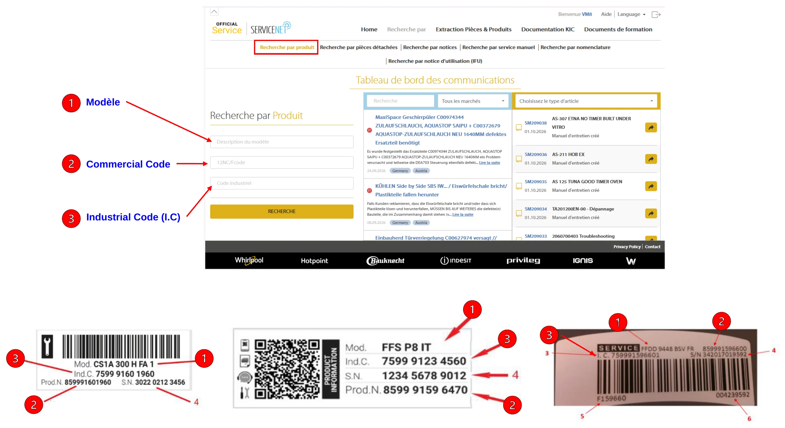

ServiceNet — Whirlpool & Indesit
Site constructeur Whirlpool / Indesit (European Appliances) : accès service après-vente.
Accès
↗ Ouvrir ServiceNet https://servicenet.europeanappliances.com/login.jsp
Notice d'utilisation — rechercher un appareil
Dans ServiceNet, ouvrir l'onglet Recherche par produit puis renseigner l'un des champs ci-dessous, avec les informations lues sur la plaque signalétique de l'appareil.
- Modèle (« Mod. » sur la plaque) : description du produit, ex. FFS P8 IT.
- Commercial Code (« Prod.N. » sur la plaque) : code commercial 12NC, ex. 859991596600.
- Industrial Code (I.C) (« Ind.C. » sur la plaque) : code industriel, ex. 7599 9123 4560.
Le repère 4 des plaques correspond au numéro de série (S.N.). Puis cliquer sur « Recherche ».
